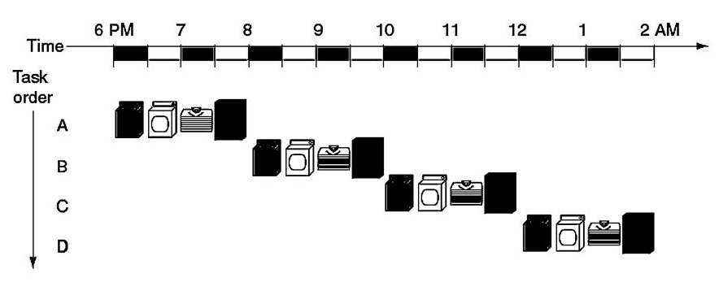
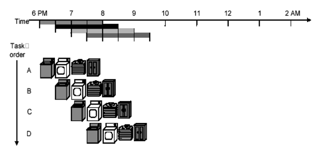
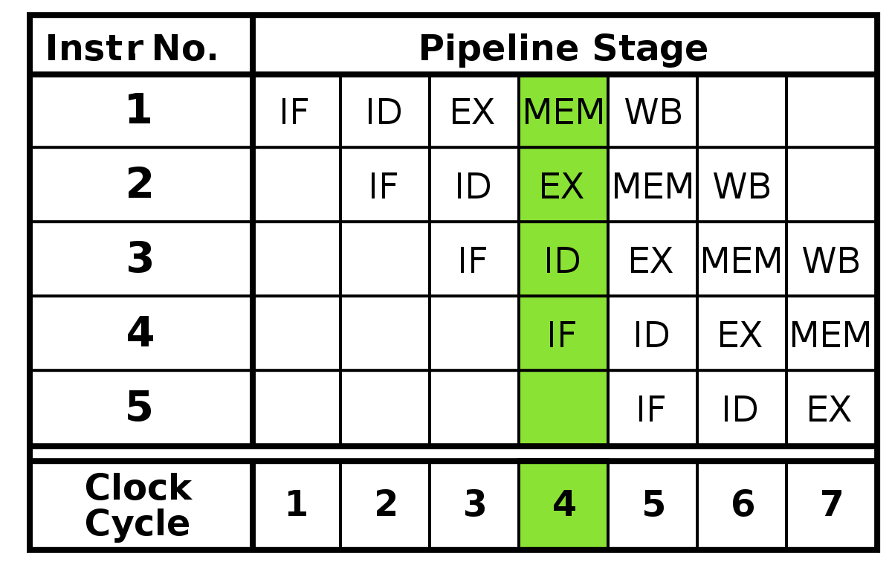
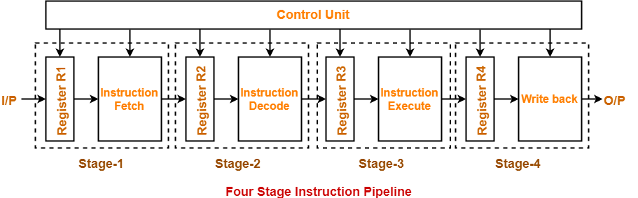

Quando falamos de processadores, um aspecto muito importante é o seu desempenho, ou seja, quão rápido ele consegue processar informações. Quanto maior for essa velocidade, mais dados podem ser processados, mais tarefas podem ser cumpridas e mais responsivo um sistema ou software pode ser. Por isso, é interessante entender o que faz de um processador um bom processador.
Assim, são alguns os fatores que podem aumentar a velocidade de um processador:
- Instruções por programa: É o número de instruções que um programa tem;
- Tempo de clock: É o tempo que o processador leva para executar um ciclo de clock. O clock é como o "ritmo" do processador, e todo circuito não combinacional do computador é regido por esse "ritmo";
- Ciclos de clock por instrução: É o número médio de clocks necessário para que uma instrução seja executada. Como cada instrução pode ter tempos diferentes, o número de ciclos por instrução pode variar;
- Throughput: É o número de instruções finalizadas por unidade de tempo.
Dispondo desses dados, podemos calcular quanto tempo um processador leva para executar e finalizar um programa. A rigor, se nosso objetivo é apenas comparar a performance de dois processadores, podemos ignorar o número de instruções de um programa. Assim, podemos tentar melhor o tempo de clock, o número de clocks por instrução ou o throughput.
Melhorar o clock, isto é, diminuir o tempo de cada ciclo envolve o tempo necessário para acessar diferentes componentes dentro do processador (veja Comparação entre pipeline e monociclo). O número de ciclos de clock por instrução depende muito da instrução a ser executada. Então vamos procurar entender como melhorar o throughput, em particular, pela técnica de pipeline.
O pipeline é uma técnica usada em processadores que consiste em “paralelizar” a execução de instruções. O que ocorre não é de fato uma paralelização, já que não estamos falando do uso de mais processadores e da divisão de tarefas entre eles. Na verdade, a paralelização do pipeline ocorre em nível de componentes da CPU, evitando que algum componente fique ocioso.
Funciona como uma linha de montagem: em uma arquitetura que não implementa pipeline, uma instrução é buscada, decodificada, executada, acessa a memória e acessa o banco de registradores, tudo isso para então todo esse processo começar de novo, só que com outra instrução. Nesse caso, o tempo inteiro há componentes sem atividade, “esperando” sua vez de agir novamente.
 Arquiteturas monociclo funcionam como um trabalhador só: uma nova atividade só começa quando outra terminaJá num fluxo de instruções de uma arquitetura que implementa o pipeline, cada componente executa uma tarefa a cada momento, finalizando e “entregando” o resultado para o próximo componente.
Por exemplo, em um primeiro momento, a instrução 1 será buscada. No momento 2, a instrução 1 será decodificada, enquanto a instrução 2 será buscada. No momento 3, a instrução 1 será executada, a instrução 2 será decodificada e a instrução 3 será buscada, e assim por diante.
 Já as arquiteturas pipeline funcionam como uma linha de montagem, e uma tarefa começa sempre que a primeira parte da tarefa anterior é finalizada
Assim, quando a instrução 1 for finalizada, a instrução 2 estará próxima do fim. Quando a instrução 2 terminar, a 3 vai estar acabando, e assim por diante.
Ou seja, depois que a instrução 1 for finalizada, cada ciclo de clock representa a finalização de mais uma instrução. Ou seja, a cada unidade de tempo, mais instruções são finalizadas. É isso que significa o aumento do throughput.
Como Funciona
Um dos aspectos importantes para implementar a arquitetura pipeline é entender os registradores intermediários. Como não podemos simplesmente salvar os dados que passam de uma etapa para a outra entre os ciclos de clock, é necessário inserir um conjunto de registradores entre cada uma dessas etapas. Escrever e ler desses registradores gastará um tempo adicional.
As entradas desses registradores vêm e vão para lugares específicos. Por exemplo, se uma instrução que indica que o conteúdo dos registradores $1 e $2 serão somados e o resultado deve ser armazenado no registrador $3, temos que a seguinte passagem nos ciclos de clock (‘C’ e ‘F’ indicam o começo e o fim do ciclo):
- 1C - Instrução é buscada na memória.
- 1F - Instrução é escrita no conjunto de registradores R2, que guardam apenas informações sobre uma instrução.
- 2C - Os registradores R2 são lidos. Os sinais da unidade de controle determinam quais bits da instrução serão pegos e para onde irão. Nesse caso, acessa-se o conteúdo dos registradores $1 e $2.
- 2F - O conteúdo desses registradores é escrito nos registradores intermediários R3. Além disso, o endereço de $3 também é escrito em R3.
- 3C - Os registradores R3 são lidos. Pelos sinais da unidade de controle, os conteúdos serão operados com uma soma na ULA.
- 3F - O resultado da ULA é escrito nos registradores R4. O endereço do registrador $3 também é escrito em R4.
- 4C - Os registradores são todos lidos. Agora, a soma volta para o banco de registradores.
- 4F - O resultado da soma é escrito no endereço de $3.
Vale lembrar que, durante esses ciclos, não é só a instrução de soma que está sendo executada, mas falamos só dela para facilitar o entendimento.
Além de ser importante para passar dados entre as etapas, também podemos passar sinais da unidade de controle entre eles. Afinal, não queremos que os sinais de controle de uma instrução afetem o processamento de outra instrução. Assim, se tivermos uma add seguida de uma store word, não corremos o risco do resultado da adição ficar guardado na memória: a memória só será habilitada quando a instrução store word chegar na fase de acesso à memória.